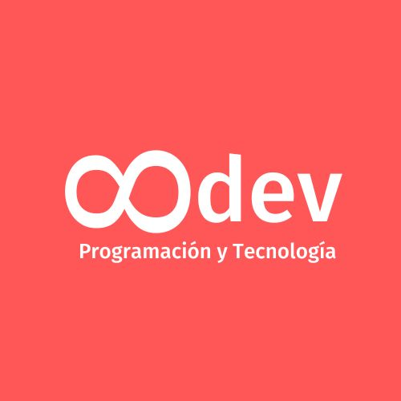

curriculum vitae

Yoshelin Yuridia Yam Gonzalez
Me gustaria poder dominar bien el tema para que en el futuro no se me pueda dificuldar.
Informacion de contacto
- Telefono: 9982290357
- Correo electronico : yoshelinyam34@gmail.com
- sitio web "https://www.instagram.com"
Experiencia escolar
Primaria: Mi primera imprecion de la primaria fue muy diferente ya que no era lo mismo que en el kinder, empezaba a ver cosas nuevas el empezar a ver
materias nuevas a inculcarme responsabilidades, el conocer amistades nuevas maestros con diferentes maneras de explicar la enseñanza sobre las festividades, los convivios, las ferias
de la escuela,el aprender trabar en equipos, el dividirnos resposabilidades, hasta en sexto de prinaria que hacen una ceremonia donde concluimos la primaria.
Secundaria:Mi experiencia en la secundaria fue totalmente diferente ya que no era lo mismo de la primaria solo tenia 10 minutos de tolerancia
ya no eran las mismas materias, ya no solo tenia un maestro si no varios el empezar a ver lo que queriamos en un futuro, las matematicas ya no solo eran sumas
ni restan, si no ecuaciones, fracciones, etc. el tener mas amigos y no solo de mi grupo si no tambien de otros grados, el hacernos comprender temas a aprender hacer
proyectos, el enseñarnos difentes maneras de estudiar, el tener un taller y enseñarnos mas cosas de lo que sabemos.
Preparatoria:La preparatoria es algo que me tenia que tomar con madurez el enfocarme en terminar la preparatoria, ya no era lo mismo de
tener el tiempo como antes si no ya era para hacer proyectos y estudiar para los exmenes, el tener maestros que te exigen para poder mejorar mas en ti, el adquirir multiples significados en la vida, el tener diferentes perspectativas
una vision de retos, el tener decicones claras, etc. El terminar la preparatoria con un buen promesio.
Experiencia laboral
- Empleada de una cafeteria:
Trabaje en una cafeteria ya que queria experimentar lo que era trabar por primera vez, entre en una cafeteria ya que a mi
me gusta mucho lo que es cocinar y en especifico los postres, cuando trabajaba hacia fresas con crema, helados preparados con gomitas, frappees, crepas, waffles,
etc..., Atendia a los clientes o hacia el preparamiento de los alimentos.Trabaje durante 3 meses ya que luego iba a entrar a estudiar la universidad, cuando
conclui los 3 meses renuncie ya que tenia que estar todo el dia en la cafeteria y no iba a tener tiempo para la univsersidad.
- Ejecutiva de ventas:
Trabaje en un equipo de 12 ejecutivos de ventas para proveer el mas alto servicio de atencion al cliente. Tambien responsable de alcanzar
el objetivo personal de ventas mensuales. Prover una excelente atencion al cliente ofresiendo asistencia profesional, el manejo al inventario, el procesamiento de envios,
la participacion en reuniones de ventas y actualizaciones de la empresa.